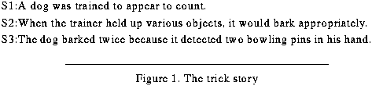

Table of Contents
Table of Contents
 Previous Chapter
Previous Chapter
Table of Contents
Previous Chapter
The effort to construct the theory and implementation presented in this document has been substantial and, as a result, a few questions have been left open to further inquiry. Along the way this document has pointed out both the deficiencies of the implementation and the open theoretical issues remaining for future research. This chapter attempts to gather these comments into a single space and to examine them with the intention of devising a plan for future resolution. Additionally, some related avenues of research exist that share many of the issues pertaining to IML theory. The following pages show how the foundation presented in the previous chapters can serve as a basis for the continuation and extension of the current research and can provide a foundation upon which to apply the research to learning problems involved in training and education.
The current chapter proposes a number of lines of investigation that extend the current research. Section 10.1 continues the effort of treating learning as a planning task and builds directly on the work presented here. The goal is to further formalize the computational task of learning-strategy construction, important in multistrategy learning systems that integrate multiple learning algorithms, and to further develop IML theory as a model of human learning. Section 10.2 extends IML theory by posing a novel approach to learning conceptual categories represented as Horn-clause propositional logic representations. This section also speculates as to what extent such work can transfer to hierarchical case-representations. We propose to develop learning algorithms that compare and contrast both expected and actual categories when revising background theories used in classification tasks in a manner similar to humans. Finally, Section 10.3 proposes an applied research project that uses the IML algorithm to understand student explanation failure in the context of intelligent tutoring systems or learning environments. The research that enables a machine to reason about its own explanation failures should easily be adapted to enable a machine to reason about user's explanations failure during learning. The research directions in all three sections combine ideas from artificial intelligence and cognitive science and have the potential to make major contributions to both fields.
The research discussed in this section represents a direct interpolation of the current research. Table 14 lists the issues raised in previous sections necessary to make IML theory and its implementation in Meta-AQUA more complete. For each issue, the table lists the sections and page numbers on which the issue was discussed. This section examines each in turn, briefly describing the problem and proposing an approach for its solution.
 Table 14: Extending IML theory
Table 14: Extending IML theory
----------------------------------------------------------------
Issue for Future Research Section(s) Page(s)
----------------------------------------------------------------
Increasing the scope of blame assignment VIII(a) 178
Additional goal interactions 7.4 170
New learning algorithms for toolbox 7.5, 8.5.1 173, 197
Parallelism in learning plans 7.4.2, 7.5 172, 173
Learning new IMXPs 6.2 136
Auto-validation of learning 5.4.2, 7.5 121, 173
Failure types as a cognitive category 3.4 65
Extend the computational evaluation 9.1.1.2, 9.4 217, 243
Extend the modeling of human learning 9.3.2 236
Extend the representational vocabulary 4.8 101
----------------------------------------------------------------
As mentioned in Chapter VIII, the Meta-AQUA implementation considers only a limited number of causes for failure during blame assignment. This represents one of the most pressing needs for future research, that is, to expand the number of cells in Table 5 considered by the blame-assignment phase of learning. The amount of work required for this task will be significant because the institution of such change requires many extensions and additions.
For instance, new IMXPs must be developed to explain the failures and to attribute blame. In order to accomplish this task additional representation vocabulary must be established to declaratively represent the IMXPs (see Section 10.1.10). Furthermore, new learning-goal types must be created that can pinpoint the potential causes. In response, an analysis of the interaction of these goals must be performed (see Section 10.1.2). If new learning goals are included, then additional learning algorithms must be added to the toolbox to solve these learning goals (see Section 10.1.3). Therefore, to adequately expand the blame-assignment task, a number of the projected future research topics must be simultaneously considered.
One of the claims of this research is that learning is like planning. The planning metaphor has been successfully used in the Meta-AQUA system to detect learning interactions between learning steps within an overall learning strategy. Chapter VII has demonstrated that at least one classic planning-goal interaction (brother-clobbers-brother-goal, Sussman, 1975) does indeed fit a learning interpretation of the metaphor. But to more fully determine at what points the planning metaphor fits learning problems and at what points it does not fit, a survey of the planning literature (e.g., Allen, Hendler, & Tate, 1990) can examine other classic goal interactions to see if they too apply in a learning environment.
For example, Wilensky (1983) analyzed a number of positive and negative goal interactions that exist in conventional planners. Resources limitations (e.g., time or computational resources) and mutually exclusive states are two negative relationships whereas goal overlap is a positive goal relationship. It seems reasonable that all of these interactions will have a learning goal interpretation. As one more example of goal conflict, suppose that a particular algorithm evaluates a concept's expected utility, and if it is lower than some threshold, deletes it from memory. Another algorithm may generalize the same concept. If the generalization is run before the forgetting (deletion) algorithm, then the expected utility may be increased so that the item is not deleted. If the algorithms are executed in the reverse order, the generalization algorithm will find nothing left to generalize.
Finally, this line of inquiry also depends on more fully developing the taxonomy of learning goals. Not only are additional acquisition goals a possibility, but, as mentioned in Section 6.3.1 (see footnote 79), there are certainly circumstances where a learning operator will need to establish a prevention goal so that particular states of the BK are not acquired by the system or a maintenance goal established so that a particular belief or proposition is preserved.
The number of algorithms presently contained in Meta-AQUA's toolbox is quite limited. Only four have been implemented at this time. They are case acquisition, EBG, abstraction, and index learning. To scale the system to larger and more difficult problems, and to better understand this approach to multistrategy learning, the size of the toolbox must be increased. In support of this goal we intend to expand the number of learning algorithms contained in Meta-AQUA's learning strategy toolbox. An early candidate for inclusion is the ID3 algorithm (Quinlan, 1986) that learns through decision trees.
At the current time, we have addressed learning-strategy construction in only a limited manner. That is, we have concentrated on integrating learning algorithms that do not perform the same learning function. Therefore, to fully address learning-strategy construction it is necessary to address the selective superiority problem (Brodley, 1993). This is a very difficult problem that involves choosing the best learning algorithm (as originally formulated, the best inductive algorithm) with which to solve a given problem with a specific distribution of input data. In some instances, it appears that the best way to establish the best solution for a specific problem distribution is to statistically cross-validate the methods manually (Moore & Lee, 1994; Schaffer, 1993). In some cases, however, as with the management of competing speedup-learning mechanisms, progress has been made when deciding when, where and which speedup mechanism should be selected (Cheng, 1995).(1)
Finally, it is an open question at what level the learning strategies in the toolbox should be modeled. Section 10.1.9 considers whether larger-grain strategies may be modeled with this approach (see also the discussion in Section 9.3). By doing such, Meta-AQUA could better simulate the deliberative goal-driven actions that people choose when learning (e.g., rereading text instructions to clarify information or rehearsing lines to memorize a speech). Conversely, Michalski and Ram (1995) suggest that learning algorithms may actually need more fine-grained decomposition. For example, EBG may be better modeled as a series of knowledge transmutations. At this level, the interactions between transmutations could be as important as they are in the data presented in Chapter IX.
As far as we know, this research is the only place in which the issue of parallelism in learning has been raised. However, in multistrategy systems that run multiple learning algorithms on a given set of data, the savings in computational resources can be significant if parallel computation is applied. In order to use such an approach, it must be guaranteed that the algorithm running in parallel do not interact. Therefore there must be no data dependencies present so that the order of calls will not affect the results of the learning. This issue is very central to the focus of this research.
Nonlinear plans have the advantage of creating a partial order so that any step not specifically placed before another can be run concurrently. For instance, Tate (1977/1990) discusses the use of non-linear planners to generate project networks that formalize a plan as a partially ordered network of actions. Such nets represent steps in a plan, such as the plan used to construct a house. For any given step in the plan, the project network specifies those steps that must come before it and those that must precede it. When constructing the house, the foundation is finished before the walls are installed, which in turn precedes the roof construction. However, the individual steps that insert the wiring and the plumbing into the walls can co-occur, although as sub-steps for the wall construction step, they must follow the foundation. Likewise, a generalized project network, such as those generated by the Nonlin component of Meta-AQUA, specify the steps which may co-occur and therefore can be run simultaneously in a learning plan.
To take advantage of this feature, however, more research needs to be performed to compare the negative effects of learning algorithms in the BK and to formally examine the possible interactions present. Learning operators must then be created for any additional algorithm to enable the planner to create a learning strategy with a partial ordering established. Moreover, the goal taxonomy presented in Section 6.3.1, "Explicit Learning Goals," must first be more fully developed if progress is to be made in this area.
Another question remaining to be examined is whether or not a system such as Meta-AQUA needs to be able to learn new IMXPs or whether a relatively small set of failure patterns can be established to cover most types of common reason failures. One of the benefits of XPs is that they represent abstract patterns that can be adapted and applied to explain many anomalies so that the number required to cover a limited domain is tractable enough to be enumerated by a researcher (Schank, 1986). The open issue with respect to Meta-XPs is whether there can be a relatively small set of IMXPs that can sufficiently cover the space of possible failure causes in Table 5, or whether the learning of new causal patterns will be necessary. That is, will the number of required patterns be too large to be exhaustively enumerated and can the domain of all reasoning failures in any way be considered "limited?" Are we asking too much of the XP paradigm?
One of the reasons that we did not try to let Meta-AQUA learn new IMXPs is to avoid the possible issue of circular reasoning. If the system uses IMXPs as a basis for deciding what to learn, yet at the same time needs to learn IMXPs, how can the system then have a firm foundation for making any of these decisions? The outcome of considering this question was our decision to see how far the research could proceed without learning IMXPs, and then, if the implementation proved insufficient, to add learning at a later point. Currently, the researcher has the burden of providing all of the IMXP knowledge structures used by the system. In practice, it is still undetermined whether this strategy is a good one. However, until further results show otherwise, this issue need not have a high priority.
One of the areas for which very little research has been attempted is the issue of automatic validation of learning results. That is, the system at present does not examine the outcomes of learning in order to establish that the learning was indeed effective (this was the unimplemented step number three of the IML algorithm in Figure 48 on page 126). Although many systems forego this line of questioning altogether, it appears that potential exists for applying the methods developed here toward this end. As mentioned in both sections 5.4.2 and 7.5, the IML algorithm should be able to track the benefits of learning in one of either two ways.
By maintaining a copy of the TMXP associated with the locations in memory that was altered, when the same concepts are re-used in the future, the system could establish whether or not the additions or modifications to the BK are useful in the future. A threshold might be used to estimate whether the new knowledge works by inferring the correctness after a given number of applications of the knowledge succeeds with no additional failure (an example of learning through success). Alternatively, if the changes proves to present more problems than benefits, the trace can be used to roll back the modification. Additional research is necessary, however, to establish the exact details by which such an approach might be justified.
Alternatively, the system could actively test its newly learned knowledge in order to falsify it. If it cannot be easily defeated by a test, then the knowledge can be more firmly believed (yet another instance of learning via success). For example, if instead of trusting the input to the system that dogs bark at containers when detecting contraband, the system might place contraband in a hidden location in order to see if this predicted event actually occurs in additional scenarios. The risk is that side-effects of the plan may negatively affect the reasoner. That is, the test may actually result in the arrest of the agent. Many issues arise when taking this approach (see Carbonell & Gil, 1990). In order to institute this validation strategy, however, the problem-solving mode of Meta-AQUA must be refined and a better theory of the integration of understanding and problem solving be developed. Although this adds an extra implementational burden, the advantage of doing so results in an additional reasoning strategy. As an additional side-effect, it also furthers the incorporation of other failure causes such as flawed-heuristic and missing-heuristic which represent failures of choice between multiple problem-solving methods. Thus a contribution to the future research outlined in Section 10.1.1 accrues.
As suggested by Martin (1992), the most interesting possibility for future research is not simply to allow Meta-AQUA to monitor the effectiveness of its learning. Instead, an intriguing possibility is to have a system use the information provided by self- evaluation to decide when an introspective approach is useful. That is, the system may be able to eventually learn the conditions under which introspection is useful itself.
As mentioned in Section 3.2, failures are of five types: contradiction, impasse, false expectation, surprise, and unexpected success. This categorical division is an implied hypothesis of this dissertation, although it has not been formally tested. It has been given some credence by functional arguments (e.g., that the failure types represent salient symptoms from which the need for learning can be inferred). Also, the computational utility of this category is established because the functionality of Meta-AQUA is based in part on the taxonomy and because Chapter IX demonstrated positive empirical results from the implementation. However, there exists a further claim that these categories have psychological reality.
If this is true, then the hypothesis predicts that human subjects will understand the world based upon these basic category assignments. In speculation, it might be possible that subjects will group stories about various reasoning failures based upon these divisions. An experimental design for such a manipulation might be modeled after the categorization tasks of Wisniewski and Medin (1991).
The taxonomy does not, however, differentiate between failures due to memory retrieval from failures due to inference. As will be remembered from Section 4.7, the representations of these failure types possess Cognize nodes that can be refined as either a memory process or an inferential process. Therefore, the taxonomy representation predicts that, for instance, people will group both impasse due to forgetting along with impasses due to not being able to infer a conclusion. Although such speculation is premature, this or a similar psychological experiments might further validate IML theory or provide a reason for changing it to a more plausible state.
The current section explores the further validation required to substantiate hypothesis number one as reported in Section 9.2. The first subsection describes the research needed to finish the study already begun. It adds two more empirical manipulations to the one already present in the experimental design. The second subsection explains how the conditions under which the hypothesis holds can be established more rigorously.
As mentioned in Section 9.1.1.2, to fully test the hypothesis that introspection facilitates learning, a more complete set of manipulations should be performed. If both blame-assignment and deciding what to learning have introspective components, then to pinpoint the effectiveness of introspection, both phases should be systematically ablated and evaluated for effects to the performance task. The mapping from symptoms of failure to selection and ordering of repairs (i.e., learning-strategy construction) is as shown in (10), whereby blame-assignment produces the causes of failure and deciding what to learn produces the learning goals.
(10) symptoms --> causes --> learning-goals --> repairs
Chapter IX evaluated learning without the mediation of learning goals, but some of the power of the introspective method may actually be centered in either the blame-assignment phase, or in the interaction between blame-assignment and deciding what to learn. Therefore, a full evaluation must also run the same experimental conditions as described in Section 9.2.1, without the causal determination from blame-assignment (i.e., using a mapping from failure symptoms directly to learning goals) and without the use of either blame-assignment or deciding what to learn (i.e., using a direct mapping from symptoms to repair). The inclusion of these two additional experimental manipulations can better isolate the causal functions of introspection.
To further investigate the conditions under which the IML method is best suited, the initial conditions of the program and the data should be varied. That is, both the program state in terms of parameter settings and the state of the BK was held constant across runs in all three conditions of the independent variable. The parameter settings of the Tale-Spin program that provided the input was also held constant. By varying these conditions it can be established under what conditions the hypothesis that introspection facilitates learning holds. It is not expected that under all conditions introspection outperforms a more reflexive approach because of the considerable computational overhead of the IML method.
Moreover, to further establish the generality of the IML method, these trials should be run with a different performance task than story understanding. A preliminary problem-solving mode for Meta-AQUA has already been developed. However, as mentioned in Section 10.1.6, the creation of a robust problem solver in the IML framework will be nontrivial. Not only must additional code be developed, but a general theory of the interaction between problem solving and learning should be developed if the implementation is to be successful.
As described in Section 9.3, Meta-AQUA has been modified to simulate novices that learn to program in LISP. Pirolli and Recker (1994) produced a set of protocols from human subjects in an experimental setting that had an especially relevant feature. Between trials the subjects would spontaneously generate protocols concerning their own understanding of the problems previously solved. The study reported that those subjects who exhibited metacognitive explanations (i.e., explanations about their own comprehension and their own failures) tended to learn better than those who did not. We chose to simulate a fragment of a particular subject (AK88) because it combined three different strategy statements and so represents an instance most like the learning-strategy construction task the Meta-AQUA program models.
The result of the simulation was favorable. Meta-AQUA modeled most of the protocol sufficiently, both from the subjects cognitive task (problem-solving) and the subject's meta-cognitive task (strategy construction). However, because the problem-solving mode of Meta-AQUA is not fully implemented the simulation of the programming task was overly simplified. And because the system's memory module is incomplete, the section of the protocol pertaining to the subject's remindings of a previous problem solving episode (i.e., a programming problem) was not finished. Only the first third of the segment was fully simulated. Therefore, to finish this trial with Meta-AQUA, the system must be programmed with both a more robust problem-solving process and a more plausible memory. Previous sections discuss the need for an integration of problem solving with understanding. Finally, a number of additional protocols need to be further simulated for IML theory to be accepted as a sufficient model of human metacognitive behavior.
Chapter IV described in detail the representation language with which Meta-XPs are represented. The focus of the chapter was to develop a representation for reasoning failures and to show how they can be composed from a primitive vocabulary of terms that constitute an ontology of mental states and actions (see Figure 19 on page 70). The utility of a complete representation of mental terms has a number of advantages. Not only can a declaratively represented mental vocabulary enhance learning and reasoning about the self, but it can also enhance a system's ability to understanding the mental properties and knowledge of other agents. Not only in artificial systems but also in human reasoners, the ability to understanding the mental world of others is important (Jameson, Nelson, Leonesio, & Narens, 1993). This section simply notes that to finish the desired ontological taxonomy many more mental terms need representation.
A goal of this research is to derive a formalism that can express states and mechanisms of the mental world. A comprehensive representation needs to be delivered that can be shared between existing formalisms, and where the reuse of representations facilitate both uniformity and transfer across domains in order to support intelligent reasoning, understanding and learning. In support of these goals, this section lists a number of concepts and dimensions that demand representation and remaining issues that must be considered in the pursuit of these research goals. Although it is perhaps premature to speculate on the exact means with which they can all be represented, the following list presents a provocative enumeration of potential candidates.
Cox and Ram (1994b) have argued in previous work (see also Appendix A, "THE DEGREES OF FREEDOM IN LEARNING") that failure provides a computationally efficient bias-filter for input examples in machine-learning systems. Results in cognitive science (e.g., Chinn & Brewer, 1993) have likewise demonstrated a complementary role for anomalous data in revising background knowledge in scientific and naïve theories. There are two major reasons that failure is a good bias from which to learn in both machines and humans. Failure guarantees that something worth learning exists, and it also guarantees that the degrees of freedom in learning are less than those when learning from success. A novel research extension exists from which to apply this result to concept learning. This extension investigates the interaction of failure and knowledge during categorization tasks.
Typical theory-revision systems contain a single-concept background theory. For example, a system that contains the classical cup theory (e.g., EITHER, Mooney & Ourston, 1994) assigns either "cup" or "non-cup" to all input examples and then adjusts its domain rules when errors occur. Solitary classification systems, however, are not cognitively plausible. People do not fail simply by classifying a cup as a non-cup. Instead there exists a false-assignment category (such as bowl) that competes with the correct category. Failures then often lead human learners to use a "compare and contrast" procedure by which knowledge of the categories is refined. Yet not only is it significant that people perform this procedure, and thus such algorithms are worth discovering, but since more constraints exist under which learning can take place, such algorithms may be computationally much more tractable. This dictates that category learning should take place in the context of multi-category theories (Mooney & Ourston, 1991, report related progress in this area).
Using Meta-XPs structures, IML theory has declaratively represented a number of reasoning failures that Meta-AQUA can reason about explicitly. The typical reasoning failure in category assignment is a failing positive (Mooney, 1993) such that a theory falsely categorizes an example, x, as a member of an expected category, E. Instead, x should be categorized by some other theory as a positive member of the actual category, A. Meta-AQUA uses a Meta-XP called an expectation failure to reason about such situations in story-understanding tasks (i.e., the contradiction failure type). During mis-classification in a multi-category domain theory, it is guaranteed that the category E is overly general and the category A is overly-specific. Thus, for propositional Horn-clause theories, an extra rule or missing rule-antecedent must exist in E and an extra rule-antecedent or missing rule also exists in A.
Although not enough room exists here for a detailed description, some preliminary heuristics for taking advantage of these constraints have been established. Moreover, during mis-classification, an agent should consider not just the fact that it thought x was a member of E, but was not; rather, the learner should also consider why x was a member of A. The agent can then compare and contrast the concepts E and A, the reasons why x was thought to be a member of E with the reason why x was thought not to be a member of A (if that was considered at all), and if A was not considered, then why not (was a memory association incorrect?). Many theory-revision systems compare x only with the theory supporting E and cannot search for errors that may be related to an interaction between multiple categories; furthermore, none support memory errors as does the research present here.
Finally, although a failing positive implicitly implies a failing negative (or perhaps a novel category), the inverse does not necessarily hold. When a successful negative occurs, the judgement may result in either a successful positive or an impasse. That is, it may know that the example is not a cup, but may or may not know what the actual category is. Meta-XPs can represent both related cases as either a forgotten category (missing-association) or as a novel category (novel-situation). Neither case has been treated by current category theory-revision systems. Although future research on this issue can make contributions to concept revision systems based on propositional Horn-clause logic, the intention is to go beyond such formulations to include hierarchically-structured case memories. Experience with case-based reasoning and explanation-pattern theory will facilitate such further extensions of concept learning through knowledge-intensive explanation and reflection (e.g., comprehension monitoring).
A question often raised when watching demonstrations of Meta-AQUA refine conceptual categories, such as its knowledge of dog-barking, is how the system determines that the reason the dog barks is that the dog detects some amount of contraband inside the luggage, rather than the fact that it detects exactly two kilograms of the contraband. The answer is that it possesses an explanation about authorities who detect explosives in a previous smuggling story, and thus the system can adapt that explanation to constrain the inferences that occur during comprehension. It is the contraband, rather than the amount of contraband, that is the focus of the explanation. Although superficially similar to the drug-bust story, HC1, a much more difficult passage for a system to understand would be the story of a dog who learns to perform tricks (see Figure 99).
 Figure 99. The trick story
In this case, the number of objects that the trainer holds, rather than the kind of objects, is crucial to the explanation. The role of knowledge and explanation is much more complex in understanding this story despite the shorter length. In particular, one cannot always depend on having a past case to adapt when explaining a story. If the research goals outlines in this section are accomplished, IML theory will be much closer to accounting for such ad hoc categories (Barsalou, 1983) as barking based on the number of objects. This will support the overall goal of establishing a more complete theory of multistrategy learning from both cognitive science and machine learning perspectives.
The goal of this applied research is to develop methods by which intelligent learning environments can automatically detect student explanation failure and can provide appropriate feedback so that the student can correct the mistakes. In order to succeed at this goal, it is necessary to be able to declaratively represent typical explanations that students make and to be able to reason about the content and structure of these explanations. The problem distills to that of mapping from symptoms of explanation failure to causal patterns that represent why the failure occurs, a task central to IML theory. Once a system understands the reason an explanation is wrong, it can then provide accurate feedback to the student so that better explanations are generated in the future. By doing so, the student will be able to more adequately understand the target domain in which learning takes place.
In order to develop intelligent learning environments that are effective in training, it is essential to monitor student progress so as to be able to provide proper feedback. To create a student model, many systems use some variant of template matching in order to infer the propositions or declarative facts the student knows. This information can then be used to provide missing knowledge or to correct erroneous knowledge. However, student inadequacies often are not limited to such interpretations. Isolated rote facts are not the only factors that lead to poor understanding; rather, a student's performance is more accurately estimated by how well they can explain a target domain during troubleshooting or problem solving. The goal of this research is to develop and explore computational methods whereby student explanations can be automatically evaluated and debugged by an intelligent system in order to assist the student to form better explanations on their own.
Schank, Fano, Bell, & Jona (1993) support the principle that effective teaching systems must present goal-based scenarios. That is, rather than simply absorbing information that is passively presented, the student must posses specific goals that motivate and direct the learning process. Therefore, a system that integrates problems solving or troubleshooting provides a more effective learning environment than do traditional browsing or tutoring systems. Moreover, not only are goals useful, but the student should generate explanations in support of these goals. Chi and her colleagues (Chi et al., 1989) have demonstrated that students who spontaneously generate explanations about a given domain perform better and learn more thoroughly than do students who generate less "self-explanations." This increase in performance is not gained by providing the explanations to the student, but is found when the student can generate them independently. Hale and Barsalou (1995) have shown that a distinct difference exists between the types and effectiveness of explanations generated during the troubleshooting of physical systems than when students are learning about the system and the facts related to the system. The quality and content of the explanations generated by students differ depending on the goal of the student. Also, Pirolli and Recker (1994) have reported that students who reflectively debug there own reasoning errors and understanding tend to be the better learners.
Given such results, the target of this line of future research is to develop environments that support student explanations during troubleshooting in key skills such as engine diagnosis. The troubleshooting task for the student is to map symptoms of system failure to faults in the system (e.g., an aircraft engine system). Explanations in this task consist of providing justifications or causal linkages for why a given fault leads to a given symptom.(2) An intelligent learning environment that possesses a capability to improve student explanations during troubleshooting must have the following major components:
A mechanism to represent and detect failed student explanations.
With these four components, learning will be enhanced by supporting, not only the principles and facts contained within a target domain, but the student's ability to explain the relations and dynamic interactions within a domain, and also by supporting the student's own comprehension monitoring. By emphasizing troubleshooting, the student will understand how target systems operate in all conditions, not just a surface understanding of normal operating conditions. The four step procedure above is a direct adaptation of the research presented here on introspective explanation of reasoning failures, and therefore represents an application of well-developed theories and computational algorithms.
To effectively build the first component above, a system must be able to represent student explanations in a declarative format. The explanation pattern (XP) knowledge formalism (Leake, 1992; Ram, 1994; Schank, 1986) presents an ideal representation that has been tested in a number of domains. In support of the input side of this component, a substantial natural language and graphical interface must be constructed to translate student expressions into XP format. A theory of explanation failure detection has already been worked out (Leake, 1992), although work remains to further generalize it.
The second component of the system is the blame assignment task. The purpose of this blame assignment task is to map symptoms of student explanation failure to explanations of the causes of failure, not unlike the student's task of mapping symptoms of device failure to failure causes. The result is an explanation of an explanation failure. The Meta-XP knowledge structures directly support such explanations. As explained in Chapter IV, these structures represent abstract causal patterns of reasoning failure. In support of this data structure, Chapter III created a comprehensive taxonomy of failure causes. This taxonomy is both domain independent and task independent, thus making it well suited for the student troubleshooting task.
Algorithms involved in the third proposed component have been described in Chapters V through VII. The task is to take an explanation of reasoning failure and to generate a set of partially ordered learning goals that, if achieved, will reduce the likelihood of the failure from being repeated. Although this work has concentrated in system self-evaluation, the transformation to an evaluation of the requisite learning of an external agent should be tractable. Work will be required to fully elaborate a set of suitable learning goals in this new domain. The theory has already been applied, however, to the domain of troubleshooting by human operators in an electronics assembly plant (Ram, Narayanan, & Cox, 1995), but has never been applied to debugging explanation of actual troubleshooters in a learning environment.
Finally, rather than provide a corrected explanation directly, the goal of the fourth component is to allow students to debug their own explanations. Once the system diagnoses the student's explanation failure, a series of increasingly specific hints and examples can be provided to the student that target the failure in light of the inferred student's learning goals (Hume, Michael, Rovick & Evens, 1996). These are presented in sequence until the student is able to explain the cause of the failure and provide the proper explanation. Much research will be involved to refine an effective way of performing this task.
As previously noted, missing and erroneous knowledge is not the only source of reasoning failure. Students errors may also occur due to memory organization problems. That is, a piece of knowledge may be present, but the associations connected with such items in memory may be missing or flawed. As an example from Barsalou, Hale and Cox (1989), consider the types of rules a student engaged in troubleshooting four-stroke engines may have learned. Two possible learned rules are that when a strong smell of gas exists during engine operation, the choke may be broken and that when the engine is manufactured by Briggs and Stratton, the condenser may be broken. However, if a strong smell of gas in a Briggs and Stratton engine is indicated, the student may try to test the condenser rather than the choke. The problem is not with the students knowledge; rather, the problem is with the memory associations connected to the rules. A system might infer this causal factor and attempt to provide an example that describes the fuel system. Chapter III provides additional examples of causal factors implicated in explanation.
This work is novel because previous student modeling has not included an analysis of student explanation and self-comprehension. Although such an application of IML theory is ambitious, the chances of success are high because the new research has a firm foundation in the results produced by this dissertation. The research promises to add an intelligent dimension to training systems that support effective learning, especially in the crucial area of explanation formation and troubleshooting skill expertise.
This chapter discussed future research in terms of open issues with the current state of IML theory, extensions to the theory, and avenues for application. Because the topics of this dissertation are so broad and wide-ranging, many directions exist to further the research. We began by enumerating and explaining ten issues remaining underexplored and directly stemming from this work and described the approaches that can be taken toward them in the future. The chapter then outlined two independent research directions that depend upon IML theory. First, the issue of learning bias and category formation extends the reach of IML theory into the learning of categories using a compare and contrast heuristic. This heuristic is cognitively inspired from the behavior of humans, but applied to the domain of Horn-clause logics. Secondly, we suggest building intelligent tutoring systems that understand student explanation failures in the same manner that Meta-AQUA understands its own explanation failures. These three categories of future research efforts (open issues, extensions and applications) demonstrate that IML theory has significant potential for generating new inquiry.
Table of Contents
 Next Chapter
Next Chapter